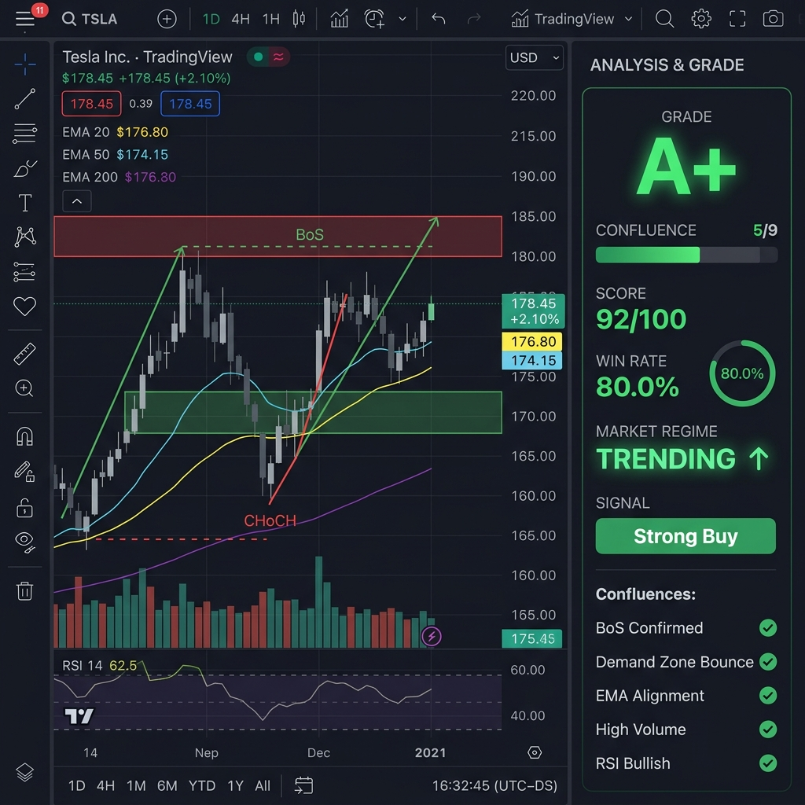
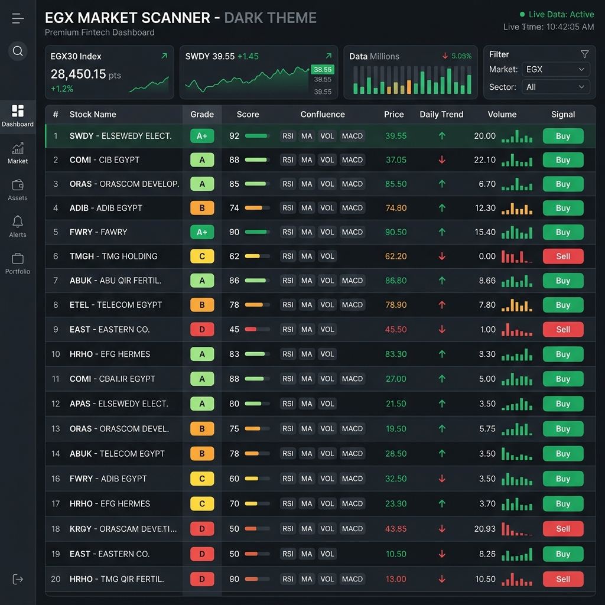

Core Market Dynamics V1
1. نظرة عامة
Core Market Dynamics V1 ليس مجرد مؤشر — بل نظام تداول خوارزمي مصغر متكامل يعمل داخل TradingView. يجمع بين Smart Money Concepts وتحليل Wyckoff وAVWAP وأنماط الشموع وإدارة المخاطر الديناميكية في أداة واحدة.
🗂 ملفات النظام
| الملف | الوصف | الحجم |
|---|---|---|
CoreMarketDynamicsV1.pine | المؤشر الرئيسي + إدارة المخاطر | ~2460 سطر |
CMD_V1_Scanner.pine | سكانر 20 سهم | ~590 سطر |
CMD_PortfolioTool.html | أداة إدارة المحفظة — أداة مستقلة | ~980 سطر |
2. Chart Signals & Labels
المؤشر يرسم علامات ومناطق متعددة على الشارت. كل واحدة ليها لون ومعنى محدد:
🏗️ إشارات الهيكل
| العلامة | اللون | المعنى |
|---|---|---|
CHoCH | 🟢 Green dotted | تغيير في السلوك (Change of Character) — احتمالية انعكاس من هبوط إلى صعود |
CHoCH | 🔴 Red dotted | تغيير في السلوك — انعكاس من صعود إلى هبوط |
BoS | 🟢 Green solid | كسر في الهيكل (Break of Structure) — تأكيد استمرار الاتجاه الصاعد |
BoS | 🔴 Red solid | كسر في الهيكل — تأكيد استمرار الاتجاه الهابط |
متى تستخدمهم: CHoCH = إنذار مبكر (انعكاس) | BoS = تأكيد للاتجاه (أقوى)
📦 مناطق الشارت
| المنطقة | اللون | الوصف |
|---|---|---|
| FVG (Fair Value Gap) | 🔵 Blue | فجوة سعرية غير مختبرة — السعر غالباً بيرجعلها عشان يملاها |
| Demand Zone | 🟢 Green | آخر شمعة هابطة قبل صعود قوي (شراء من المؤسسات) |
| Supply Zone | 🔴 Red | آخر شمعة صاعدة قبل هبوط قوي (بيع من المؤسسات) |
| EMA 20 / EMA 50 | 🔵 / 🟡 | دعم ومقاومة متحركة (سريع/بطيء) |
| SMA 200 | ⚪ White | الفاصل بين الأماكن الغالية (Premium) والأماكن الرخيصة (Discount) |
| VWAP (optional) | ⚪ Dotted | متوسط السعر المرجح بالحجم — السعر العادل في اليوم |
🔷 إشارات أخرى
| العلامة | الشكل | المعنى |
|---|---|---|
| ◂▸ Liquidity Grab | Small triangles | صناع السوق بيسحبوا السيولة — اختراق كاذب وبعده انعكاس على طول |
| ◆ RSI Bull Divergence | Green diamond below | السعر بيعمل قاع أقل بس الـ RSI بيعمل قاع أعلى = قوة خفية (إيجابي) |
| ◆ RSI Bear Divergence | Red diamond above | السعر بيعمل قمة أعلى بس الـ RSI بيعمل قمة أقل = ضعف خفي (سلبي) |
| Confluence BUY ✓ | Green label | إشارة شراء مؤكدة — كل الشروط اتحققت |
| Strong / Weak | Text at swing | قاع قوي = دعم من المؤسسات / قمة ضعيفة = هدف سهل الاختراق |
📈 مستويات فيبوناتشي التلقائية
| المستوى | اللون | الاستخدام |
|---|---|---|
0.382 | 🟢 Green | تصحيح بسيط — الترند قوي جداً |
0.500 | 🟡 Yellow | تصحيح متوسط — ده العادي والأكتر حدوثاً |
0.618 | 🟠 Orange | النسبة الذهبية — آخر فرصة للدخول قبل انعكاس الترند |
نصيحة: الدخول عند 0.618 مع إشارة Confluence BUY = أفضل فرصة دخول ممكنة!
3. الفريم الزمني المناسب
اختيار الفريم الزمني الصح أساسي. السوق المصري ليه خصائص فريدة (جلسة 4.5 ساعة فقط).
| الفريم | النوع | المميزات | العيوب | مناسب لـ |
|---|---|---|---|---|
| 5-15 min | Scalping | فرص كتير | إشارات كاذبة أكتر، ضغط عالي | للمحترفين المتفرغين بس |
| ★ 1 Hour | الأفضل! | توازن مثالي — 4-5 شموع في الجلسة | صفقات أقل شوية | لكل متداولي السوق المصري |
| 4 Hours | Swing | إشارات قوية جداً | شمعة واحدة بس في الجلسة! | للي مش متفرغ يتابع دايماً |
| Daily | Position | أقوى الإشارات | صفقة واحدة في الأسبوع تقريباً | للمستثمرين على المدى الطويل |
★ Why 1H is Best for EGX?
- جلسة قصيرة (4.5 ساعات): فريم الساعة هيديك 4-5 شموع في اليوم — كفاية جداً عشان تاخد قرار صح بدون تشتيت.
- حماية الجلسة بتشتغل كويس: منطقة الفخاخ (Trap Zone) هتكون شمعة واحدة، ومنطقة الأموال الذكية (Smart Money) هتاخد 2-3 شموع، يعني متناسبة.
- دقة الـ Squeeze Momentum: المؤشر بيحتاج 20 شمعة على الأقل عشان يقيس التذبذب، على فريم الساعة ده بيعادل أيام معدودة وبيكون أسرع وأدق في إعطاء الإشارة.
- حسابات دقيقة لحجم التداول (Volume): الـ 100 شمعة على فريم الساعة بتساوي أرقام واقعية جداً وتقريباً بتعادل شغل 22 يوم تداول (يعني شهر كامل).
- مناطق أنضف للـ FVG والعرض/الطلب: دوشة أقل ومناطق أوضح للعين وللمؤشر على الشارت.
⚠️ Suggested Settings per Timeframe
| الإعداد | 5-15min | 1H | 4H/Daily |
|---|---|---|---|
| Lookback | 20 | 20 (default) | 20-30 |
| Confluence Min | 4-5 | 3 (default) | 2-3 |
| Score Buy Threshold | 7+ | 5 (default) | 3-5 |
| ATR SL Multiplier | 1.5 | 2.0 (default) | 2.5-3.0 |
4. لوحة التحكم
لوحة التحكم بتستخدم تصميم جدولين لتوفير المساحة: Action Card (أعلى يمين) للحكم والسكور والدخول/وقف/هدف، وAnalysis (أعلى شمال) لتفاصيل المؤشرات وإدارة المخاطر المتقدمة. الصفوف بتتدمج والقيم العادية بتتخفى تلقائياً.

| الصف | الوصف |
|---|---|
| ★ Verdict + Grade | القرار النهائي: شراء قوي / شراء / يميل للشراء / محايد / بيع |
| ★ Score | السكور الأساسي + الإضافي = الإجمالي (أقصى حاجة ±22) |
| ★ Confluence | عدد العوامل المحققة مقارنة بالحد الأدنى المتغير |
| ★ Momentum | اتجاه السكور: 📈 صاعد / ➡️ ثابت / 📉 هابط |
| ★ Regime | نوع السوق: ترند / عرضي / متذبذب بشدة / انتقالي |
| ★ RSI Div | دايفرجنس الـ RSI: إيجابي / سلبي |
| ★ Wyckoff | تحذير من التصريف: ⚠️ Absorption (امتصاص للسيولة) |
| ★ Win Rate | نسبة نجاح آخر 5 إشارات |
| ★ Liquidity | سيولة السهم: عالية / مقبولة / ضعيفة |
| ★ Money Flow | تدفق الأموال: 🟢 إيجابي (شراء مؤسسات) / 🔴 سلبي |
| ★ Order Flow | تحليل الذيول: 🟢 ضغط شراء / 🔴 ضغط بيع |
| المنطقة | منطقة الغالي (Premium) أو الرخيص (Discount) مقارنة بمتوسط 200 |
| Int / Ext | اتجاه الهيكل السعري الداخلي والخارجي |
| Volume | تقييم الحجم: عالي جداً (>95%) / عالي / عادي / ضعيف |
| Squeeze | الانفجار السعري: في مرحلة ضغط / انفجر / بيتوسع |
| Session | جلسة البورصة: أموال ذكية (SMART) / فخاخ (TRAP) / إغلاق / مزاد |
📊 أوضاع عرض الداشبورد (Dashboard View)
لو الداشبورد طويلة ومش ظاهرة كلها، استخدم Dashboard View — أول إعداد في المؤشر — للتبديل بين 4 أوضاع:
| الوضع | المحتوى | ~الصفوف | متى تستخدمه |
|---|---|---|---|
| Compact | Verdict + Score + Entry/SL/TP (جدول يمين بس) | ~12 | أثناء التنفيذ — أهم الأرقام بس |
| Analysis | Score + Confluence (يمين) + كل المؤشرات (جدول شمال) | ~6+15 | تحليل السوق — قبل الدخول |
| Risk | كارت المخاطر كامل (يمين) + أدوات متقدمة (شمال) | ~14+10 | إدارة المخاطر بالتفصيل |
| Full | كل حاجة — الجدولين كاملين | ~14+20 | شاشات كبيرة — كل البيانات |
Tip: ابدأ بـ Analysis لتقييم السهم، ثم بدّل لـ Compact أثناء التنفيذ.
5. نظام السكور الموحد
السكور الأساسي (±12) — مشترك مع السكانر
السكور الأساسي يُحسب من 8 عناصر ثابتة، متطابقة بين المؤشر والسكانر.
| العنصر | القيمة | الشرط |
|---|---|---|
| 1. Structure Direction | ±2 | هيكل داخلي وخارجي صاعد = +2 / هابط = -2 |
| 2. EMA Alignment (20/50) | ±1 | السعر فوق المتوسط 20 والأخير فوق المتوسط 50 = +1 |
| 3. Volume Percentile | ±1 (±2) | حجم عالي جداً = +2، عالي = +1، ضعيف = -1 |
| ↳ ★ Wyckoff Penalty | -2 | حجم عالي جداً + شمعة دوجي = تصريف! |
| 4. Squeeze Momentum | ±1 (±2) | انفجار إيجابي من منطقة الضغط = +2 |
| 5. Daily Trend (MTF) | ±2 | متوسط 50 فوق 200 على اليومي = +2 |
| 6. Session Shield | ±1 | منطقة أموال ذكية (Smart) = +1، منطقة فخاخ (Trap) = -1 |
| 7. AVWAP [V1] | ±1 | السعر فوق الـ AVWAP = +1، السعر تحته = -1 |
| 8. Candle Patterns [V1] | ±1 | ابتلاع شرائي/شمعة هامر = +1، ابتلاع بيعي = -1 |
Score + OF لتوفير المساحة وتسهيل القراءة السريعة.سكور المكافأة (±8) — المؤشر فقط
| العنصر | القيمة | الشرط |
|---|---|---|
| B1. FVG Balance | ±1 | الفجوات الشرائية (Bull FVGs) أكتر من البيعية = +1 |
| B2. Money Flow Fast | ±1 | مؤشر السيولة السريع إيجابي = +1 |
| B3. Money Flow Slow | ±1 | مؤشر السيولة البطيء إيجابي = +1 |
| B4. S/D Balance | ±1 | مناطق الطلب أكتر من مناطق العرض = +1 |
| B5. Trendline Break | ±1 | كسر لخط مقاومة هابط = +1 |
| B6. Hit Rate Drift | ±1 | أكتر من 60% من الشموع الأخيرة إيجابية = +1 |
| B7. Order Flow | ±1 | ضغط شراء في الذيول = +1، ضغط بيع = -1 |
| B8. Market Breadth | ±1 | المؤشر الثلاثيني (EGX30) فوق المتوسط 50 = +1 |
6. تقييم الإشارة
| التقييم | الشروط | المعنى | الإجراء |
|---|---|---|---|
| A+ | Score ≥ 7 + Conf ≥ 4 | أقوى إشارة ممكنة | ادخل بالحجم الكامل |
| A | Score ≥ 5 + Conf ≥ 3 | إشارة قوية | ادخل بـ 70-80% |
| B | Score ≥ 3 + Conf ≥ 2 | إشارة متوسطة | ادخل بـ 50% + وقف ضيق |
| C | Score ≥ 1 | إشارة ضعيفة | فقط مع إدارة مخاطر صارمة |
| D | Score ≤ -5 + Conf ≥ 3 | خطر شديد | لا تشتري / فكر في البيع |
7. فلتر التقاطع الديناميكي
حد التقاطع الأدنى يتعدل تلقائياً حسب نوع السوق. في الترندات القوية يطلب عوامل أقل، وفي التقلبات يصبح صارم.
9 عوامل تقاطع (المؤشر) / 8 (السكانر)
| # | العامل | الشرط |
|---|---|---|
| 1 | Structure Direction | هيكل داخلي صاعد (قمم وقيعان أعلى) |
| 2 | Price vs SMA200 | السعر فوق متوسط 200 (أو داخل منطقة الخصم) |
| 3 | Volume Level | حجم التداول أعلى من مستوى 75% زائد شروط تانية |
| 4 | Squeeze / EMA | السعر انفجر لفوق من منطقة الضغط أو المتوسطات مترتبة صح |
| 5 | Session Zone | السعر في منطقة أموال ذكية (ومش في المزاد) |
| 6 | Daily Trend | على الفريم اليومي متوسط 50 أكبر من 200 |
| 7 | Order Flow | توالي إيجابي لضغط الشراء من الذيول |
| 8 | Market Breadth | المؤشر الرئيسي (EGX30) فوق متوسط 50 |
| 9 | AVWAP [V1] | السعر فوق الـ AVWAP = صاعد |
★ الحد الديناميكي
| النظام | الحد الأدنى | السبب |
|---|---|---|
| 📈 TRENDING | 2 (الأقل) | ترند قوي — عشان متضيعش الفرصة |
| 📊 RANGING | 4 (أعلى شوية) | عشان فيه اختراقات كاذبة كتير |
| ⚡ VOLATILE | 5 (الأكثر صرامة) | مخاطرة عالية — محتاج تأكيد قوي |
| 🔄 TRANSITIONING | 3 (الأساسي) | ظروف السوق العادية |
إزاي تقراها: 🟢 BUY (4/📈2) = اتحقق 4 عوامل / والحد الأدنى 2 (لأن السوق ترند)
8. كشف نوع السوق
| النوع | الكشف | TP × | SL × | Size × | Conf Min |
|---|---|---|---|---|---|
| 📈 TRENDING | ADX > 25 + ATR > 1.1× | 1.5 | 0.9 | 1.0 | 2 |
| 📊 RANGING | ADX < 20 + ATR < 0.9× | 0.7 | 1.1 | 0.8 | 4 |
| ⚡ VOLATILE | ATR > 1.8× | 0.8 | 1.3 | 0.5 | 5 |
| 🔄 TRANSITIONING | None of the above | 1.0 | 1.0 | 1.0 | 3 |
9. فلتر وايكوف
مبني على مبدأ وايكوف: لو الحجم استثنائي (>95th percentile) لكن جسم الشمعة ضعيف (<30% من النطاق)، المؤسسات بتوزع — بتبيع والأفراد بتشتري.
✅ اختراق حقيقي
حجم XH (عالي جداً) + شمعة: خضراء قوية (الجسم = 75%) → زيادة 2 سكور
⚠️ توزيع (Absorption)
حجم XH (عالي جداً) + شمعة: دوجي (الجسم = 15%) → خصم 2 سكور!
الداشبورد هيظهر لك: ⚠️ Absorption
10. تتبع الأداء
يتتبع آخر 5 إشارات شراء Confluence ويحسب نسبة النجاح. يسجل الدخول ووقف الخسارة وTP1 ويراقب: هل TP1 ضرب قبل SL؟
| النتيجة | المعنى | اللون | الإجراء |
|---|---|---|---|
| ≥ 60% | أداء ممتاز | 🟢 | ادخل بثقة |
| 40-59% | أداء متوسط | 🟡 | كن حذراً |
| < 40% | أداء ضعيف | 🔴 | قلل الحجم أو انتظر |
كيف يعمل
بيستخدم Array Queue (طابور بيانات) من 5 خانات. لما بتظهر إشارة جديدة: بيتتبعها لحد ما تضرب الهدف الأول (✅ مكسب)، أو وقف الخسارة (❌ خسارة)، أو يمر 50 شمعة وتعتبر (خسارة زمنيّة). مجموعهم بيديلك عدد الصفقات الكسبانة بالظبط.
11. إدارة المخاطر
نظام متكامل يحسب وقف الخسارة، 3 أهداف، حجم المركز، والربح المتوقع — كله ديناميكياً حسب السكور ونوع السوق.
حجم المركز حسب السكور
| السكور | Risk % | السبب |
|---|---|---|
| ≥ 7 | 3.0% | إشارة قوية جداً — حجم أكبر |
| ≥ 5 | 2.0% | إشارة جيدة — حجم طبيعي |
| ≥ 3 | 1.5% | إشارة متوسطة — حجم أقل شوية |
| ≥ 1 | 1.0% | إشارة ضعيفة — حجم ضعيف جداً |
| < 1 | 0.5% | محايد/سلبي — أصغر حجم |
📌 وقف الخسارة المتحرك الديناميكي
| مستوى الربح | مضاعف التريل | السبب |
|---|---|---|
| < 3% | 1.5× ATR | مساحة واسعة — سيب السهم يتحرك براحته |
| 3% - 5% | 1.2× ATR | تضييق — ابدأ احمي ربحك |
| > 5% | 1.0× ATR | الأضيق — أمّن الأرباح بالكامل! |
🇪🇬 حماية الحد اليومي للبورصة المصرية
السوق المصري ليه حد أقصى للحركة 10% (أو 20%) في الجلسة. المؤشر بيضمن إن الـ SL والـ TP ما يتعدوش الحد ده — لأن لو وقف الخسارة عدى ليمنت الجلسة، الأوردر مش هيتنفذ على الشاشة أصلاً!
★ إدارة المخاطر المتقدمة
10 أدوات متقدمة تعمل تلقائياً لحماية رأس المال وتحسين الأداء — مصممة خصيصاً للبورصة المصرية (EGX).
🌡️ Portfolio Heat Map | خريطة حرارة المحفظة
يتتبع إجمالي المخاطرة المفتوحة. فوق 6% = تحذير ⚠️ | فوق 10% = 🚫 توقف!
🚨 Circuit Breaker | قاطع الدائرة
بعد 3 خسائر متتالية → يمنع كل إشارات الشراء + يصفّر حجم الصفقة. يحميك من التداول الانتقامي.
📐 Volatility-Adjusted Exits | خروج معدّل بالتذبذب
يعدّل TP/SL تلقائياً حسب ATR/SMA(ATR,50). تقلب عالي = SL أوسع + TP أقرب. هدوء = SL أضيق + TP أبعد.
🔗 Correlation Guard | حارس الارتباط
لو ارتباط السهم بالمؤشر (EGX30) > 85% → تقليل الحجم 30% لتجنب التعرض المفرط.
⏰ Time-Based Risk Decay | تآكل زمني
الوقف المتحرك يضيق تدريجياً: 0-10 بار = 2.0× | 11-25 = 1.5× | 26-50 = 1.0× | >50 = 0.7×
📊 Expectancy Calculator | حاسبة العائد
يحسب E(R) = (Win% × AvgWin) - (Loss% × AvgLoss) من بيانات Mini Backtester الفعلية. لو سالب = النظام خاسر!
📍 Smart Entry Zones | مناطق دخول ذكية
يقترح أسعار دخول أفضل قريبة من AVWAP / EMA20 / Demand Zone لتحسين نسبة العائد/المخاطرة (R:R).
🔥 Consecutive Loss Tracker | تتبع الخسائر
| الخسائر | الحجم |
|---|---|
| 0-1 | 100% |
| 2 | 75% |
| 3 | 50% |
| 4+ | 25% |
🎰 Kelly Criterion | معيار كيلي
يستخدم ½ Kelly لحساب الحجم الأمثل من بيانات Mini Backtester الحقيقية. يظهر بعد 3+ صفقات.
⏰ Session Risk Premium | علاوة الجلسة
| المنطقة | المضاعف |
|---|---|
| ⚫ مزاد افتتاح | ×0.5 |
| 🔴 Trap Zone | ×0.75 |
| 🟢 Smart Money | ×1.0 |
| 🟡 Close | ×0.6 |
| ⚫ مزاد إغلاق | ×0.3 |
12. حماية الجلسة
| الوقت | المنطقة | Score ± | الوصف |
|---|---|---|---|
| 9:30-10:00 | ⚫ AUCTION Open | -1 | مزاد الافتتاح — أحجام تداول غير حقيقية |
| 10:00-11:00 | 🔴 TRAP ZONE | -1 | فخاخ صناع السوق — أوامر وهمية |
| 11:00-13:30 | 🟢 SMART MONEY | +1 | نشاط المؤسسات — أفضل وقت للتداول! |
| 13:00-14:00 | 🟡 CLOSE CHAOS | 0 | إغلاق المراكز — تذبذب عشوائي |
| 14:20-14:30 | ⚫ AUCTION Close | -1 | مزاد الإغلاق — أحجام تداول وهمية |
13. تدفق الأوامر
يحاكي بيانات دفتر الأوامر عبر تحليل الذيول والحجم. ذيل سفلي طويل + حجم عالي = أوامر شراء مؤسسية عند هذا المستوى.
📊 تحليل الذيول
| الحالة | الشرط | التفسير |
|---|---|---|
| 🟢 Buy Flow | ذيل سفلي ≥ 60% + حجم تداول عالي | أوامر شراء مؤسسية — المشترين رفضوا الأسعار المنخفضة |
| 🔴 Sell Flow | ذيل علوي ≥ 60% + حجم تداول عالي | أوامر بيع مؤسسية — البائعين رفضوا الأسعار العالية |
| 🟡 Neutral | ولا شرط اتحقق | مفيش ضغط سيولة واضح |
14. Premium & Discount Zones
| المنطقة | الشرط | الإجراء |
|---|---|---|
| 🔴 PREMIUM++ | فوق الخط العلوي الخارجي | خطر! متشتريش — السعر غالي جداً |
| 🟠 PREMIUM | بين الخطين العلوي الداخلي والخارجي | احترس — السعر غالي |
| ⚪ FAIR VALUE | بين خطوط المنطقة الوسطى | السعر العادل |
| 🔵 DISCOUNT | بين الخطين السفلي الداخلي والخارجي | فرصة شراء محتملة |
| 🟢 DISCOUNT++ | تحت الخط السفلي الخارجي | فرصة ذهبية — السعر رخيص جداً! |
15. سكانر 20 سهم
سكانر يفحص 20 سهم في نفس الوقت باستخدام نفس خوارزمية V1 بالظبط. كل الإعدادات بالإنجليزي مع زر تبديل الاسم/الكود.

🔄 تزامن كامل مع المؤشر الرئيسي
| الميزة | Indicator | Scanner | Sync? |
|---|---|---|---|
| Core Score Algorithm | ✅ | ✅ | ✅ 100% |
| AVWAP [V1] | ✅ | ✅ | ✅ 100% |
| Candle Patterns [V1] | ✅ | ✅ | ✅ 100% |
| Order Flow | ✅ | ✅ | ✅ 100% |
| Wyckoff Effort | ✅ | ✅ | ✅ 100% |
| Confluence | /9 | /8 | Different |
| Bonus Score (B1-B8) | ✅ ±8 | — Core only | Indicator only |
| Name/Code Toggle | — | ✅ | Scanner only |
أعمدة لوحة السكانر
| العمود | الوصف |
|---|---|
| Stock | اسم الشركة أو الكود (ممكن تبدل بينهم من الإعدادات) |
| التقييم | جودة الإشارة: من A+ لـ D |
| Score + OF | السكور + 🟢/🔴 ضغط الأوامر |
| Conf | تقاطعات مؤكدة من 8 |
| Price / % | السعر الحالي ونسبة التغير % |
| Daily | الاتجاه اليومي 🟢/🔴 |
| Vol / SQZ / RSI | مستوى الحجم، حالة الاختناق السعري، وقيمة الـ RSI |
| Signal | شراء (BUY) / ⚠️ تحذير / — (لا شيء) |
16. أداة إدارة المحفظة (Portfolio Tool)
أداة HTML مستقلة (CMD_PortfolioTool.html) بتحل أكبر مشكلة في Pine Script: مش بيقدر يتتبع الصفقات عبر الأسهم المختلفة. الأداة دي بتربط تحليل CMD لكل سهم بالمخاطرة الإجمالية للمحفظة.
🎯 المميزات الرئيسية
| الميزة | الوصف |
|---|---|
| 🌡️ خريطة الحرارة | أضف الصفقات المفتوحة (الرمز، الدخول، الوقف، الأسهم) → شوف إجمالي المخاطرة كنسبة %. بيقولك القيمة اللي تحطها في Open Trades Count في CMD. |
| 📊 حجم المركز | ادخل رأس المال + ميزانية المخاطرة → يطلعلك أقصى عدد أسهم لأي صفقة. |
| 🔗 ارتباط القطاعات | Correlation Matrix بيعرض الارتباط بين الأسهم حسب القطاع. بيمنع التركيز الزيادة. |
| ⚠️ أسوأ سيناريو | بيحسب أقصى خسارة لو كل الوقفات ضربت في نفس الوقت. |
| 💾 حفظ/تحميل | تصدير واستيراد JSON. نسخ للحافظة بضغطة زر. |
🔄 إزاي بتتكامل مع CMD
| ميزة CMD | تكامل أداة المحفظة |
|---|---|
Portfolio Heat Map input (Open Trades Count) | الأداة بتعرض العدد بالظبط |
| Correlation Guard (لكل سهم) | الأداة بتعرض الارتباط على مستوى القطاع |
| Position Sizing (لكل سهم) | الأداة بتتحقق من إجمالي التعرض |
| Circuit Breaker (لكل سهم) | الأداة بتتتبع إجمالي المخاطرة % |
🚀 إزاي تستخدمها
- افتح
CMD_PortfolioTool.htmlفي المتصفح (بتشتغل بدون انترنت) - أضف كل صفقة مفتوحة: الرمز، سعر الدخول، وقف الخسارة، عدد الأسهم
- راقب إجمالي Portfolio Heat % — خليه تحت 6%
- انسخ عدد الصفقات المفتوحة لخانة
Open Trades Countفي CMD - قبل ما تدخل صفقة جديدة، تأكد إن إجمالي المخاطرة مش هيتعدى الحد
17. سيناريوهات التداول
الوقت: 11:15 AM 🟢 Smart Money | السهم: SWDY | الفريم: 1H
★ Verdict: 🟢 STRONG BUY A+ | Score: 5+3+1 = 9 | Confluence: 5/📈2
★ Win Rate: 4/5 (80%) 🟢 | Zone: 🔵 DISCOUNT
القرار: ✅ هتدخل بكامل الكمية ← هدف أول ← حرك الوقف لنقطة الدخول ← هدف تاني ← هدف تالت
السهم: ORHD | الحجم: 🔥 XH بس الشمعة: Doji (12%)
★ وايكوف: ⚠️ Absorption | السكور: 1 بس! (بدل 5)
القرار: ❌ متشتريش! المؤسسات بتصرف
الوقت: 10:45 🔴 Trap Zone | السكور: 5 (شكله مغري!)
التقاطع: 🟡 WAIT (3/⚡5) — الحد الأدنى 5 لأن السوق متذبذب بشدة!
القرار: ❌ متدخلش! التقاطعات أقل من المطلوب + وقت فخاخ + نسبة النجاح ضعيفة 20%
18. نصائح احترافية
🎯 أفضل فريم زمني
استخدم فريم الساعة (1H) كخيارك الأساسي. إشاراته واضحة ومناسبة جداً لمدة الجلسة المصرية (4.5 ساعات = 4 لـ 5 شموع).
🔔 التنبيهات
متفعلش التنبيهات الفردية لكسر الهيكل وغيرها. استخدم فقط ★ التنبيه المجمع الذكي (Smart Consolidated Alert) — هيبعتلك إشعار واحد منظم فيه كل التفاصيل.
💰 نظام جني الأرباح
- الخطوة 1: بيع 40% عند TP1
- الخطوة 2: حرك الوقف لـ Break-Even — risk-free trade!
- الخطوة 3: بيع 30% عند TP2
- الخطوة 4: بيع آخر 30% عند TP3 أو Trailing Stop
19. القواعد الذهبية
20. مرجع الإعدادات
كل الإعدادات المتاحة في TradingView. الافتراضيات مضبوطة للبورصة المصرية على فريم الساعة.
🏗️ إعدادات الهيكل
| الإعداد | الافتراضي | الوصف |
|---|---|---|
| Lookback Length | 20 | Bars to detect swing highs/lows |
| Show Internal/External | ✅ | Toggle CHoCH/BoS visibility |
| ★ Clean Chart | ❌ | Show dashboard only (hide chart drawings) |
💰 إعدادات إدارة المخاطر
| الإعداد | الافتراضي | الوصف |
|---|---|---|
| Capital | 50,000 | Portfolio size in EGP |
| ATR SL Multiplier | 2.0 | ATR multiplier for stop-loss |
| Confluence Min | 3 | Min entry conditions (dynamic by regime) |
| Score Buy Threshold | 5 | Min score for buy signal |
| TP Scale (1/2/3) | 1.5/2.5/3.5 | ATR multipliers for 3 targets |
🛡️ إعدادات إدارة المخاطر المتقدمة
| الإعداد | الافتراضي | الوصف |
|---|---|---|
| Portfolio Heat Map | ✅ | Track total open risk |
| Open Trades Count | 0 | Manual open trades count |
| Circuit Breaker | ✅ | Block signals after consecutive losses |
| Max Consecutive Losses | 3 | Losses before breaker trips |
| Correlation Guard | ✅ | Reduce size on high index correlation |
| Smart Entry Zones | ✅ | Suggest better entries near AVWAP/EMA/Demand |
| Session Risk Premium | ✅ | Adjust size by session timing |
| Kelly Criterion | ✅ | Optimal sizing via ½ Kelly |
| Vol-Adjusted Exits | ✅ | TP/SL scale with current ATR |
| Expectancy Calculator | ✅ | Real-time E(R) per trade |